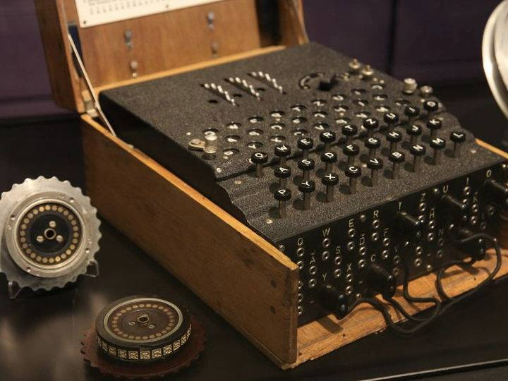
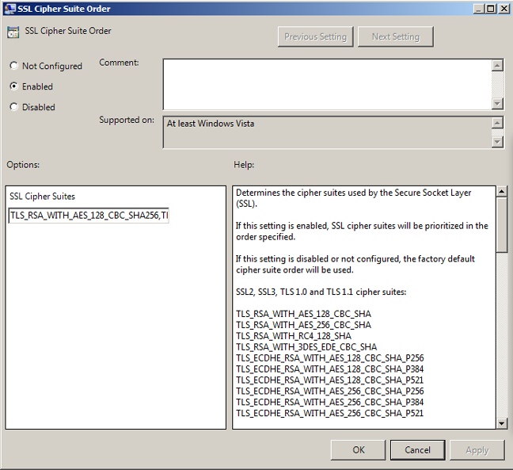
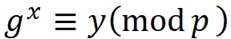

Codeforces，每周举办高质量的算法比赛，同时承办许多国外知名企业举办的算法竞赛，算法爱好者的交流学习基地。
还记得初中的时候，有一段时间班里的男生流行用密码来写小纸条。有的时候小纸条传的比较远，又不想让中间的人偷看，也可能是为了觉得比较酷，就设计了各种神奇的暗号和密码，只有一个小圈子里的人才能看懂。其实，密码学是一门深奥的学科，它的历史可以从古罗马时代开始追溯。在信息时代，尤其是网络安全领域，密码学正在变得越来越重要。加密算法的发展经历了许多个阶段。
古典密码学中主要出现的是代替密码、换位密码等。比如说凯撒密码是将每个英文字母向后推移三个，如abcwxyz变成defzabc，简单的换位密码如把每个单词倒过来写。这样的密码易于学习、使用方便，但是也很容易被破译。常见的破译方式是频度分析，利用英语等语言中每个字母在单词每个位置出现的频率不同来猜测字母之间的对应关系，再结合单词长度、前后缀分析、重复多次的关键词猜测等技巧，这样的密码就很可能被破解。

在第二次世界大战时期，同样是为了发送军事机密消息，德国发明了世界上第一部机械密码机Enigma。它由键盘、加密用的转轮和显示器组成，使用者将原文输入进去之后，通过转轮显示出对应的密文；接收方在同样的机器上将密文输入，就会显示出原文。这个机器的原理还是基于代替密码。加密用的转轮上有26*2个接口，中间用电线连接，表示一种映射。利用多个转轮的组合，就可以把输入的字母转换到某一个对应的字母上。它的特点是转轮是可以拆卸、旋转的，在使用机器前可以对转轮的构造进行调整，每一种排列组合都对应了一种不同的映射。这样，每个Enigma机都可以表示成千上万中不同的密码。使用的双方需要在事先约定一种转轮的组装方式，而不知道转轮组合方式的第三方，即使拿到了机器也无法破译出密码。由于排列组合的方式很多，暴力破解的难度非常大。（当然这个机器也是有漏洞的，波兰人雷耶夫斯基最早通过德军使用规定的漏洞找到了破解的一些办法，而德国人也进行了许多补救措施，这样的来回拉锯形成了二战历史上著名的“密码战”。图灵奖 得主命名者图灵作为当时的英国算法科学家就在破解Enigma机上做出过很多贡献。）
比起以前的加密方法，Enigma机的主要进步在于它不像是以前的密码那样需要对加密和解密的方式进行保密，只有学会这种密码的人才能使用；而它的机器本身是公开售卖的。只需要使用者事先约定转轮的组装方式即可。这种“加密方式公开、事先约定参数”的加密方式被提炼传承，形成了如今的 对称密钥加密体系 ，又称私钥加密。在这个体系中，Enigma机就是加密算法，是可以公开的；而转轮的组装方式是“密钥”，就像是一把钥匙。发送者使用钥匙来加密，而接收者使用钥匙来解密，只有握有同一把钥匙的人才能解开密码。
在现代计算机科学中常用的对称加密算法有DES算法（二进制换位密码）和RC算法（利用异或）等。对称加密算法安全性高、速度快，而且算法实现简单，因此被广泛使用，比如在https协议中就用到多种对称加密算法（见右图，可以看到DES、AES、RC4等协议）；但它们都需要一个只有双方知道的“密钥”才能工作。如果网络上的两台计算机之间想要私密通信，在第一次通信时势必需要先互相交换他们的密钥，并对采用的加密算法和参数等进行约定；但是在危险的网络上，任何数据的明文传递都有可能被监听、窃取。那么，有什么办法可以让收发双方安全的传递密钥吗？
上一节中提到，当代的对称加密算法本质上是古典密码与计算机超强计算能力结合后的产物，加密者和解密者在事先需要共同约定一个加密算法，或者是在加密算法公开的情况下共同约定一个“密钥”。我们可以理解为，这些算法利用的是收发双方和其他人之间的信息差，将这个“信息差”不断扩大后作用于整个被加密的信息或文件。
在1976年，W.Diffie和M.Hellman两个年轻的研究者想到了一个全新的方法。他们发表了New directions in cryptography一文，并提出了Diffie-Hellman密钥交换算法，开创性地提出了非对称加密的思想，为现代密码学指出了一个新的方向。突然，现代密码学从一个半军事的角落里脱离出来，一跃成为通信科学一切领域中的中心研究课题。
为了简单地叙述非对称加密的主要思想，我们不妨假设收发双方想要传递的是一个数字（传递文字消息的本质是传递一个个ascii码，图像和声音转换为二进制文件后也可以分割成一个个数字）。W.Diffie和M.Hellman的想法是要找到一个二元函数f(x,y)，要求已知x和y可以算出f（废话），已知f和y也可以倒推出x，但是已知f和x无法倒推出y。也就是说f(y)存在反函数，而f(x)不存在反函数。假如这样的函数f存在，那么收发双方可以进行这样的操作：
首先发送方临时随机选取一个数y1，x是想要传递的原文，那么计算f1=f(x,y1)，将f1发送给收取方。
注意这个时候收取方由于只收到了f1，不知道y1的值，因此没办法计算出x的值；窃听方也是同理。那么收取方也临时随机选取一个数y2，计算f2=f(f1,y2)，将f2发送给发送方。
这时对于窃听者来说，虽然可以窃听到f2=f(f1,y2)和f1，但是由于f(x)不存在反函数因此算不出y2的值。但对于发送方来说，虽然也不知道y2的值，但可以计算f3=f-1(f2,y1)发送给收取方。
这时候注意到

根据f1,f2,f3，窃听方依旧无法获得任何信息，但收取方只要再算一下x=f-1(f3,y2) 就可以得到传递过来的x了。
举个形象的例子便于理解这个过程：
我把一个箱子快递给你，但是快递过程中不安全。于是就先在上面加一把锁，钥匙只我自己持有（假如把钥匙快递给你也是不安全的）；然后你收到后在上面加另一把锁，钥匙只你持有，把箱子发回来；这时箱子上有两个锁，我用我的钥匙把箱子上第一个锁解开，再发回给你；你再用你的钥匙把第二个锁解开，就可以打开箱子了。
我们可以发现，在这个算法中，即使在网络上传递的中间值全部被窃取，窃听者也无法获得传递的消息内容，而这个过程中完全没有“公钥”的传递或约定过程，y1和y2都是临时取出来的随机数。 对于快递过程来说，在每次传输过程中箱子都是上锁的，因此保证了安全。
这个算法的神奇之处在于，它加密的原理利用的收发双方和窃听方之间的“信息差”，是他们分别握有的随机数，在非对称加密体系中被称为叫“私钥”。顾名思义，这个钥匙只有一人持有，是不在网络上进行传递的。
这个算法诞生之后，互联网上的安全传输第一次成为了可能事件，引起了学术界的轰动。尤其是非对称加密算法与对称加密算法配合使用，可以快速又安全地在公网上传输大量的数据，促进和推动了互联网上大量安全协议的设计、发展和使用。但不要忘了，这一切的基础，是上面所假设的，神奇的函数f。
现今最常见的非对称加密算法一般是RSA算法，这是
离散对数，简单地说就是给定g、p和y，求满足

的正整数x，且x<ϕ(p)。
Codeforces，每周举办高质量的算法比赛，同时承办许多国外知名企业举办的算法竞赛，算法爱好者的交流学习基地。

Github，一个面向开源及私有软件项目的托管平台，在此可以十分轻易地找到海量的开源代码，并与全球程序员合作开发。

虚位以待。
如果你有什么问题、意见或者建议，随时欢迎和我发邮件联系！如果对我在博客中提到的项目源码感兴趣，可以去我的github主页看看。